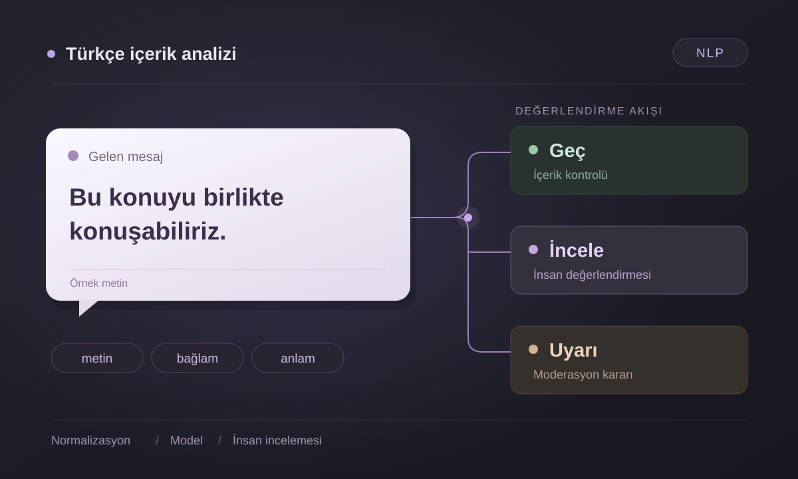

Temsili çalışma görünümü
Temsili çalışma görünümüYAPAY ZEKÂ / MİKROSERVİS
Afet sonrası ihtiyaç önceliklendirme
İhtiyaç verilerini kategori ve aciliyet düzeyine göre değerlendiren servis mimarisi ve makine öğrenmesi modeli.
Projeyi inceleYazılım geliştirme & yapay zekâ
Ben Hasan. Veriyi anlamlandıran, gerçek problemlere çözüm üreten yazılımlar geliştiriyorum.
SEÇİLİ ÇALIŞMALAR
Farklı problemler, ortak yaklaşım: veriyi anlamak, uygun sistemi kurmak ve sonucu değerlendirmek.
Temsili çalışma görünümüYAPAY ZEKÂ / MİKROSERVİS
İhtiyaç verilerini kategori ve aciliyet düzeyine göre değerlendiren servis mimarisi ve makine öğrenmesi modeli.
Projeyi incele GitHub README · komut örnekleri
GitHub README · komut örnekleriSİSTEM TASARIMI / BACKEND
Bellek içinde çalışan hafif anahtar değer depolama sistemi.
Projeyi incele
Temsili moderasyon akışıDOĞAL DİL İŞLEME / DERİN ÖĞRENME
Sosyal medya metinlerini sınıflandırmaya yönelik model eğitimi ve değerlendirme.
Projeyi inceleÇalışma yaklaşımım
İhtiyacı netleştiriyor, veriyi inceliyor ve çözümün neyi başarması gerektiğini belirliyorum.
Veriden önceliklendirmeyeUygun yöntemi seçiyor, modelleri eğitiyor ve sonuçları değerlendiriyorum. Her deneme bir sonraki karara yön veriyor.
Dil işleme çalışmamVeriyi ve iş mantığını anlaşılır bir yazılım mimarisinde birleştiriyor; test edilebilir, sürdürülebilir sistemler kuruyorum.
Sistem tasarımı çalışmamÇALIŞMA MASAMDA
Devam eden bir çalışmadan notlar.
L3, L4 ve L5 vertebralarını ve anatomik anahtar noktaları belirlemeye yönelik bilgisayarlı görü çalışması.
Çalışmayı inceleİLETİŞİM